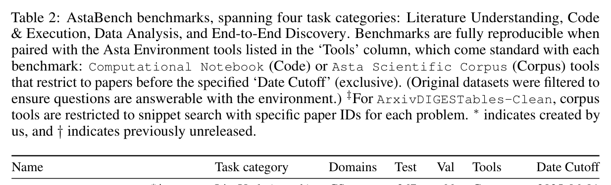
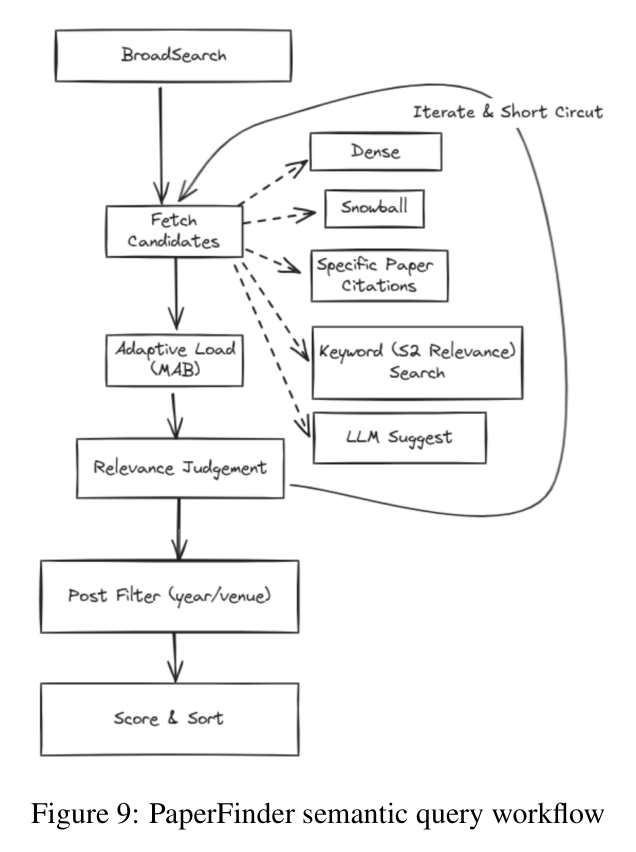
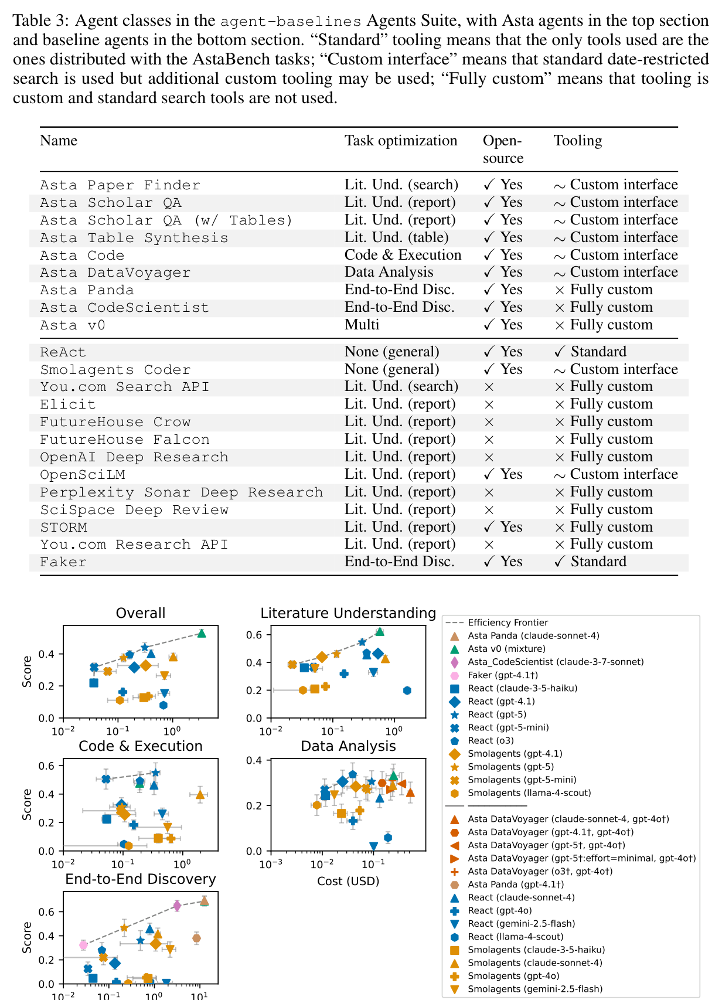
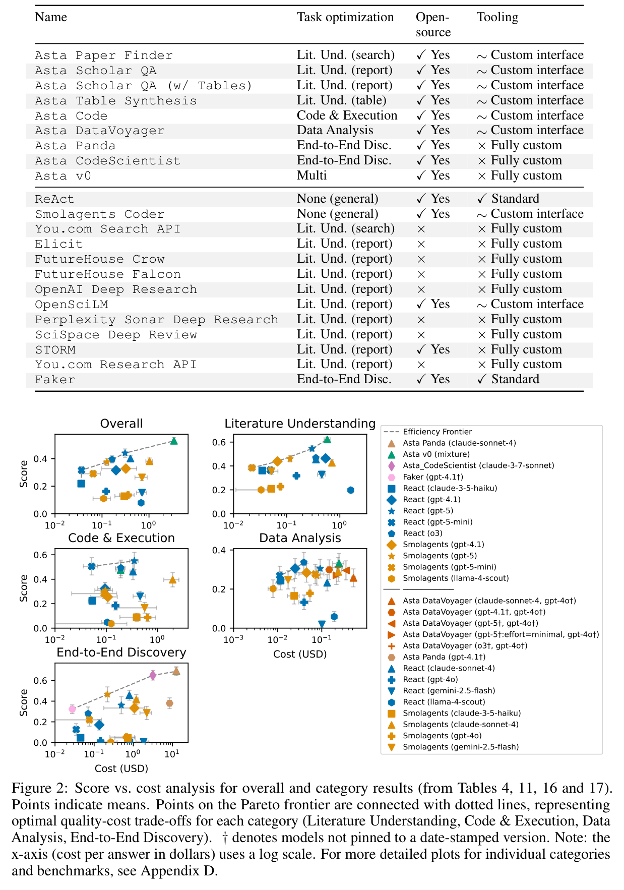
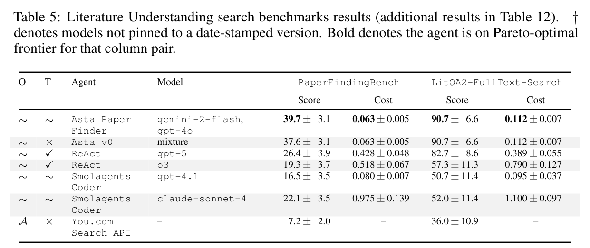
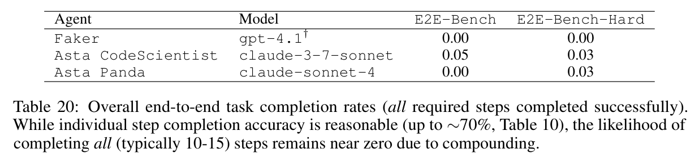

5 个
PaperFindingBench（267+66，CS，检索）、LitQA2-FullText-Search（75+10，生物，recall@30）、ScholarQA-CS2（100+100，长文带引用回答）、LitQA2-FullText（选择题）、ArxivDIGESTables-Clean（生成综述对比表）。
11 个 benchmark、2,404 道题、57 个 agent、成本作为一等指标 —— 这条线上真正的参照点，也是 ScholarQuest 漏掉的那一篇。
为什么这篇要单独归档：它 2025-10 上 arXiv、已被 ICLR 2026 接收，做的正是 ScholarQuest 声称"不存在"的东西 —— 标准化 agent 工具环境 + 日期截断防污染 + leaderboard + 统一评测。ScholarQuest 全文 19 条参考文献里没有它。要引"agentic 文献检索的评测现状"，参照点应该是这篇。
但它有一个硬约束：语料是托管服务，不可下载、不可自托管、可随时撤销。它的"可复现"是时间意义上的，不是基础设施意义上的。
论文只说 "over 2400 problems"。合理推断 按 Table 2 逐行相加是 2,404 = 1,918 test + 486 validation —— 注意这个数含验证集，引用时别当成测试规模。

snippet_search 的论文 ID 白名单。PaperFindingBench（267+66，CS，检索）、LitQA2-FullText-Search（75+10，生物，recall@30）、ScholarQA-CS2（100+100，长文带引用回答）、LitQA2-FullText（选择题）、ArxivDIGESTables-Clean（生成综述对比表）。
SUPER-Expert（45+50，跑通研究仓库实验）、CORE-Bench-Hard⁻（37+35，移除 GPU 任务后 45→37）、DS-1000（900+100，单元测试）。
DiscoveryBench（239+25，假设匹配分）、E2E-Bench（40+10）、E2E-Bench-Hard（40+10，HypER 生成、无简化步骤）。
论文声称 LitQA2 的双重计数做了修正：LitQA2-FullText 与 LitQA2-FullText-Search 在 Literature Understanding 宏平均里各占权重 0.5。原始 LitQA2 有 199 道选择题，筛到目标论文在截断日期内且在 Asta 索引中的 85 道。
333 条 = 48 navigational + 43 metadata + 242 semantic。审计发现 这个分型是 test+val 合计口径，论文没给分 split 的拆分。
| 类型 | 数量 | 来源 | 金标怎么定 |
|---|---|---|---|
| Navigational 找那一篇已知论文 | 48 | PaperFinder 产品日志，刻意挑 PaperFinder 曾经失败的 | 金标集已知 |
| Metadata 元数据约束，含否定 | 43 | 手工编写，覆盖 Semantic Scholar API 用法，含"not citing the transformers paper"这类否定、嵌套、递归 | 每条配一段调 API 完整求解的 Python 代码，其结果即金标 |
| Semantic 按内容描述找一组论文 | 242 | PaperFinder + OpenSciLM 日志，加上 LitSearch 与 PaSa 数据集 | 无全覆盖金标：一个可能为空的已知匹配小集 + 一组LLM 生成的加权相关性标准 |
挑选程序：找 PaperFinder 返回很少/没有"完全相关"结果、但已知存在相关论文的查询 → 人工检查归纳挑战类型 → 构造覆盖全部挑战类型的集合，优先选 PaperFinder 组件消融会显著减少命中的查询。挑战类型（脚注 19）："multiple criteria, complex relations between criteria, use of uncommon terms, use of incorrect jargon, seeking details that are not part of the main claim of the paper, query providing unnecessary or even distracting background information."
原文："The dataset mixes the different categories, and doesn't clearly indicate which query belongs to which category (even though a human will very easily tell)." —— 逼 agent 自己判断该走哪条路径。目前 metadata 与 semantic 严格互斥（"which may change in future versions"）。
另一个关键设计：判官拿不到论文全文。agent 必须为每条结果提交 markdown_evidence（论文原文或施引论文里的逐字片段），判的是这段证据。原文："As we aim to assess retrieval and not the judging-LLM's ability to handle long-contexts…"。提交上限 250 篇，按相关性降序。

两套指标，最后不分类型直接按查询取平均：
关于那个"估计的集合大小"，原文：
"The estimated set size is determined by running multiple variations of PaperFinder with very lenient threshold, taking the union of the resulting set, and then multiplying it by a factor that ranges from 2 to 10 to estimate an upper bound… (smaller initial sets are less reliable and are multiplied by a larger number)."
用 nDCG 而不是 precision 来平衡召回的理由："it provides a more relevant signal (favoring ranking relevant documents over irrelevant ones). The combination of nDCG and recall@estimated makes precision mostly redundant."
重要问题 —— 循环性。召回的分母来自对自家 PaperFinder 做宽松消融跑出来的并集，而挑战类型的筛选也是针对 PaperFinder 的失败案例；论文也承认这套评测是 Ai2 内部 PaperFinder 回归测试集的子集。而榜首正是 Asta Paper Finder。
另外 审计发现 那个 2–10 的倍数规则没有给公式或阈值，nDCG 的增益函数与截断也没说 —— 这是整个打分里最大的黑箱。人工校验只覆盖 1/5 的查询（原文 "For a fifth of the queries, the relevance criteria were manually verified and corrected or tweaked"，且"the queries"指 242 条 semantic 还是全部 333 条有歧义）。
经 MCP 暴露两套工具。Asta Scientific Corpus 8 个：snippet_search、search_papers_by_relevance、get_paper、get_paper_batch、get_citations、search_authors_by_name、get_author_papers、search_paper_by_title。另一套是 Computational Notebook：有状态 Jupyter 沙箱，支持 %%writefile 与 !shell，单 cell 5 分钟超时，沙箱内代码可反调宿主工具（支持 CodeAct 风格 agent）。
防污染机制："These tools can restrict outputs to papers preceeding a date; AstaBench uses this feature to limit results to the date of benchmark creation so that new papers do not contaminate results."（截断为不含当日）
关键约束：索引只是托管服务，不可下载、不可自托管，论文从未披露语料规模。88 页里没有任何论文数 / token 数 / 索引大小 / 快照版本号。实际约束在仓库与许可里：
https://asta-tools.allen.ai/mcp/v1，需申请 ASTA_TOOL_KEY（allenai.org/asta/resources/mcp），以 x-api-key 传入。--max-samples=8，429 即超限。allenai/asta-bench，需接受协议的 HF_TOKEN。Appendix A 原则 2 原文："It is particularly important that benchmark suites provide standard search tools with reproducible test-time access to the same document corpus, yet large-scale, optimized search indexes are costly to create and public search tools are not reproducible; we are unaware of any such public, reproducible, large-scale search tools."
Reproducibility Statement 说的是 code 与 logs 开源，语料不在其中。合理推断 结论：它的可复现性是时间维度的（日期截断使结果不随新论文漂移），不是基础设施维度的 —— Ai2 关端点或换索引，历史数字即无法复核，而且没有索引快照版本号可锚定。这比 BEIR 式可下载语料是严格更弱的保证。
反过来说，这正是 ScholarQuest 的 Lewen API（SQLite FTS5 + Qdrant，约 3M 论文，可本地起）留下的唯一真实差异 —— 很窄，但真实。
57 个 agent / 22 个 agent class（Table 3 列了 22：9 个 Asta + 13 个 baseline）。agent-baselines 只开源了其中 16 个 class —— 脚注 13："some are closed source and thus not usable on new inputs; however, we provide ways to reproducing those results based on cached answers"。框架建在 Inspect（UK AISI）上，agent-eval 补的是套件 / leaderboard / 成本层。
成本口径："we use a frozen snapshot of the litellm cost map" —— 冻结价格表保证跨时间可比，计入缓存折扣，不计延迟类折扣（service tier、batching）。按每题美元报。只有 UI、无 token 日志的系统（You.com / Elicit / SciSpace）成本记为 "–"。

值得点出来：只有 ReAct 和 Faker 属于 Standard。9 个 Asta agent 全是 ∼ 或 ×，而头名 Asta v0 是 Fully custom（×） —— 论文自己最好的 agent 不满足自己定的最严格工具档。这与 ScholarQuest 未披露自引夺冠是同类问题：自建 benchmark 自家夺冠是这个子领域的通病。

| Agent | 模型 | Overall | 每题成本 | LitUnd | E2E |
|---|---|---|---|---|---|
| Asta v0 | mixture | 53.0 | $3.40 | 62.2 | 68.8 |
| ReAct | gpt-5 | 44.0 | $0.31 | 54.6 | 36.1 |
| ReAct | claude-sonnet-4 | 40.1 | $0.40 | 45.4 | 45.7 |
| ReAct | o3 | 39.4 | $0.16 | 46.8 | 28.0 |
| ReAct | gpt-5-mini | 31.6 | $0.04 | 36.5 | 12.6 |
| Smolagents Coder | llama-4-scout | 11.1（最佳开权重） | $0.11 | 20.0 | 0.5 |
最高 53.0%。"Science research assistance is still far from solved." 最佳开权重 agent 只有"a terrible 11.1%"。
Asta v0 比次席 ReAct+gpt-5 高 9 个点（53.0 vs 44.0），成本是 11 倍（$3.40 vs $0.31），主要被 E2E 拖累（Asta Panda E2E 每题 $12.57）。
"the per-token cost is 3 to 25 times lower for gemini-flash and llama-scout compared to o3 or sonnet, [但] the weaker models often take more steps or get stuck in loops, causing a ReAct agent to end up being twice as expensive"。
gpt-5 换掉 o3 后在 ReAct 上大涨（ScholarQA-CS2 +13.4、SUPER-Expert +24.8、LitQA2-Search +25.3），但在 Asta Scholar QA / DataVoyager / Code 上反而变差。论文推测 gpt-5 是对 ReAct 式工作流调过的，进而 "there may be diminishing value in application-specific workflows"。


这段是本地档案里最该记住的一段 —— 它已经把 ScholarQuest 的立论说过了，早八个月。
（E.2, p.34）"However, current paper finding benchmarks largely confine themselves to a small subset of search query kinds (e.g. LitSearch (Ajith et al., 2024), PaSa (He et al., 2025) and LitQA2 dataset (Skarlinski et al., 2024)). They focus on purely semantic criteria, not covering metadata or navigational queries, and they are missing a methodological process to cover the different within-semantic challenging types."
对通用 agent benchmark 套件的批评（§1）也很有用：
"no large-scale, controlled document retrieval tools exist, making it unclear whether a 'winning' agent has superior AI capabilities or merely access to a more relevant information source."
"we are unaware of agent benchmarks that account for variations in tool usage, and only a few like HAL measure cost, which is critical since even simplistic strategies (e.g., taking a majority vote over repeated invocation) can boost accuracy by spending more."
"most published evaluations only compare to a small number of other agents or ablations, making it difficult to assess whether claimed improvements represent genuine advances."
它自己也有同样的张力：LitSearch 和 PaSa 一边被批评，一边被当作 semantic 子集的查询来源挖用。跟 ScholarQuest 批引文偏置却自己用引文扩展是同一类毛病。
没有 Limitations 章节。审计发现 检索全部 88 页，"limitation" 只出现在讲别人的局限、ScholarQA-CS 讨论和 prompt 文本里。对一篇 ICLR 论文是个显眼的缺失，最接近的只有 §6 "Conclusion and Future Work" 加零散的逐 benchmark 注意事项。
"We plan to develop fresh benchmark problems that use the latest scientific knowledge, which is contamination-resistant and past the training cut-off date of models." —— 日期截断只防检索污染，不防预训练污染。
Asta Panda、Asta CodeScientist 因"源码尚未整合"用缓存结果计分；Elicit / SciSpace / OpenSciLM / OpenAI DR 同样。UI-only 系统完全没有成本数，Pareto 结论因此不完整。
Perplexity 的 search_mode=academic 在评测窗口（2025-08-03～07）是坏的，只能跑网页搜索，且无法抽引文，最终按"仅标题+URL"计分。
整套"weighted towards CS"，只有两个 LitQA2 任务是生物；ArxivDIGESTables-Clean 94.3% 是 CS。自承要"deepen coverage of … biomedicine"。
"the problems are specified in considerable detail and hence only weakly test the ideation and planning steps."
Asta Paper Finder 是"a frozen-in-time and simplified version of our live paper-finding agent"，单轮、不能追问。
E2E rubric 打分在 50 项开发集样本上"judged 92% correct"；ScholarQA-CS2 判官用 gemini-2.5-flash（与 gemini-2.5-pro 的 Pearson 0.995），系统级 Kendall τ = 0.467 vs 专家，排除 Elicit 后升到 0.800；实例级一致 68.1%。留出 rubric 偏置也量化了：5 个系统里 3 个在被排除出 ingredient 池后显著掉分（平均 2.5 点，p ≤ 0.01）。
证据等级说明。本页基于本地 PDF 全 88 页（pdftotext -layout 全文通读，含附录 A–H）。论文声称 为原文引述或表格数据；审计发现 为全文检索后的缺失认定；合理推断 项论文未言明（含 2,404 这个由 Table 2 相加得出的总题数）。许可与限流细节来自 github.com/allenai/asta-bench 文档与 allenai.org/asta-corpus-license（2025-08-26 版）。
未能确定：语料规模（论文与 Ai2 文档均未披露，勿自行断言数量级）、索引是否有版本/快照标识、ASTA_TOOL_KEY 是否免费、live leaderboard 当前排名（HF Space 抓取为空）。
归档日期：2026-08-03 · 论文版本 v2（2026-04-21）· 图片由本地 PDF 按图注区域裁切；Table 20 因图注在表下方，为定点重裁。